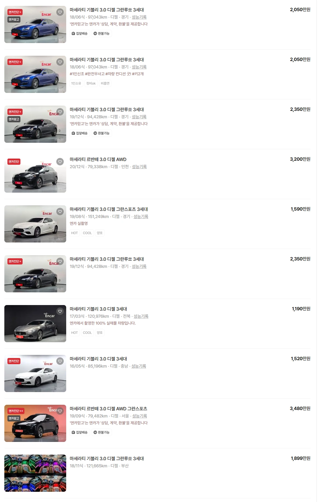

마세라티 디젤모델
사면 인생이 1260도 돌아감
DPF가 지갑에 삼지창으로 구멍냄

마세라티 디젤모델
사면 인생이 1260도 돌아감
DPF가 지갑에 삼지창으로 구멍냄
외형은 존나 예쁜데 사고 싶지 않음..
소나타는 어떰?
절대 후회하지 않지
소나타 신형 좋음
돈없으면 lf전기형 키로수 작은거 사도 되고
캐스퍼 전기차도 좋고 아반떼가 제일 나은 선택인듯
저 김개붕 팀장이 60개월 풀할부 + 여유자금까지 전액 대출승인 도와드렸습니다.
아는 애도 기블리 타고다녔는데 그때는 래퍼들이 마쎄라리카 이 지랄해서 그냥 비싼 차 인가보다 했는데
이 친구 어린나이에 어떻게 이걸 타지?? 의아했는데 소식들어보니 스스로 생을 마감했더라고
기블리건 이클래스건 5시리즈건 감당을 하고 못하고가 문제가 아니라 차가 내 인생에서 할부금이라는 이름으로 월급 가져가는 순간 미래의 질이 수직하락함
난 첫차가 아빠가 타던 옛날 그랜저였고 두번째 차는 다썩은 중고 아반떼였는데
아반떼AD, 프라이드14년식 수동
중고차 주차장 나서는 순간 듣도보도 못한 경고등이 다뜨는 차
아반떼 신형풀옵이 저거 두배가격이라는게 ㅋㅋㅋ
3시리즈중고가 가격도싸고 가오도부릴수있고 수리유지비도 별로안비싼 가성비최고의차라고생각함
좋은 글 감사합니다. 오늘 저희 회사 신입직원들에게 해당 글 링크로 전파하였습니다.
캬 믓지다 믓져
금수저아니면 사회초년생이 가오잡으면 좃댐!!
사회초년생은 역시 아반떼 N이지! TCR 옵션 넣으면 좀 탈만하지 않을까 싶음
자금이 2천이라면 반드시 현기를 사라
SUV는 좀 빡세고, 쏘나타, 옵션 빠진 그렌저나 K7을 사라
다음 신차 뽑기 전까지 사골 육수마냥 우려 먹으며 탈 수 있다.
난 초년생때 개썩다리 SUV 탓는데
개인적으로는 suv랑 세단의 장단점이 있는것 같다
Suv 타면 이사하거나, 작은 가구까지 당근하기 좋고
세단은 효율적이고
폴스타2
난 그냥 qm6 샀다
아반떼, 소나타,K5, 투싼, 스포티지 이게 중고차론 좋은거같은데
내 아반떼 AD는 아직 현역이다